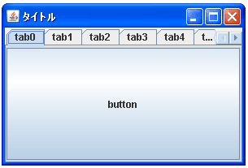
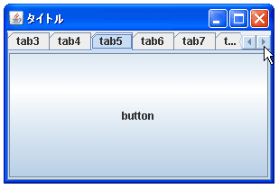
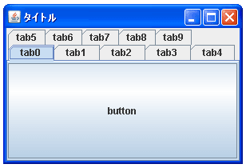

- Home ›
- Swing ›
- JTabbedPaneクラス
タブの数が非常に多い場合の表示方法を設定する
追加されたタブの数が非常に多い場合にはタブペインの幅や高さの範囲内で収まりきらない場合があります。そのような場合にタブをどのように表示するのかを設定します。タブをスクロールさせて表示する方法とタブを多段化して表示する方法を選択できます。表示方法を設定するにはコンストラクタで指定する方法とメソッドを使って設定する方法があります。
まずコンストラクタで指定する方法を確認します。
JTabbedPane
public JTabbedPane(int tabPlacement,
int tabLayoutPolicy)
指定されたタブ配置およびタブレイアウトポリシーを使用して、空の TabbedPane
を作成します。タブ配置は、
JTabbedPane.TOP
JTabbedPane.BOTTOM
JTabbedPane.LEFT
JTabbedPane.RIGHT
のいずれかです。
タブレイアウトポリシーは、
JTabbedPane.WRAP_TAB_LAYOUT
JTabbedPane.SCROLL_TAB_LAYOUT
のいずれかです。
パラメータ:
tabPlacement - コンテンツに対するタブの配置
tabLayoutPolicy - すべてのタブが単一のランに収まらない場合にタブをレイ
アウトするポリシー
例外:
IllegalArgumentException - タブ配置またはタブレイアウトポリシーが前述
のサポートされている値のいずれでもない場合
1番目の引数にはタブの表示位置を指定する値を設定します。詳しくは『タブの表示位置を設定する』を参照して下さい。
2番目の引数にタブの数が多い場合にどのように表示するのかを表す値を設定します。設定できる値は次の2つです。
| 値 | タブの表示方法 |
|---|---|
| JTabbedPane.WRAP_TAB_LAYOUT | 多段化して表示します |
| JTabbedPane.SCROLL_TAB_LAYOUT | スクロールして表示します |
実際の使い方は次のようになります。
JTabbedPane tabbedpane =
new JTabbedPane(JTabbedPane.LEFT, JTabbedPane.WRAP_TAB_LAYOUT);
tabbedpane.addTab("title1", new JButton("button1"));
メソッドで指定する
次に一度作成したJTabbedPaneクラスのオブジェクトに対してメソッドを使ってタブの表示方法を設定する方法を確認します。JTabbedPaneクラスで用意されている「setTabLayoutPolicy」メソッドを使います。
setTabLayoutPolicy public void setTabLayoutPolicy(int tabLayoutPolicy)
すべてのタブが単一のランに収まらない場合に、タブをレイアウトするためにタ
ブ区画が使用するポリシーを設定します。次に有効な値を示します。
JTabbedPane.WRAP_TAB_LAYOUT
JTabbedPane.SCROLL_TAB_LAYOUT
UI によって値が設定されていない場合、デフォルト値は
JTabbedPane.WRAP_TAB_LAYOUT になります。
Look & Feel によっては利用できるレイアウトポリシーの一部しかサポートして
いないことがあります。その場合は、このプロパティーの値が無視されることが
あります。
パラメータ:
tabLayoutPolicy - タブのレイアウトに使用するポリシー
例外:
IllegalArgumentException - layoutPolicy の値が前述の正当な値の いずれ
でもない場合
タブが表示方法をint型の値で指定します。指定できる値はコンストラクタの場合と同じです。
実際の使い方は次のようになります。
JTabbedPane tabbedpane = new JTabbedPane();
tabbedpane.addTab("title1", new JButton("button1"));
tabbedpane.setTabLayoutPolicy(JTabbedPane.SCROLL_TAB_LAYOUT);
サンプルプログラム
では簡単なサンプルを作成して試してみます。
import javax.swing.*;
import java.awt.BorderLayout;
public class JTabbedPaneTest9 extends JFrame{
public static void main(String[] args){
JTabbedPaneTest9 frame = new JTabbedPaneTest9();
frame.setDefaultCloseOperation(JFrame.EXIT_ON_CLOSE);
frame.setBounds(10, 10, 300, 200);
frame.setTitle("タイトル");
frame.setVisible(true);
}
JTabbedPaneTest9(){
JTabbedPane tabbedpane = new JTabbedPane();
for (int i = 0 ; i < 10 ; i++){
tabbedpane.addTab("tab" + i, new JButton("button"));
}
tabbedpane.setTabLayoutPolicy(JTabbedPane.SCROLL_TAB_LAYOUT);
getContentPane().add(tabbedpane, BorderLayout.CENTER);
}
}
上記をコンパイルした後で実行すると次のように表示されます。

今回はタブの表示方法として「JTabbedPane.SCROLL_TAB_LAYOUT」を設定してあります。この場合、タブが表示されている位置の端(今回の場合は右端)にタブの位置を移動させるための矢印のボタンが表示されます。ボタンをクリックすることで画面上に表示されるタブを切り替えることが出来ます。

なお表示方法として「JTabbedPane.WRAP_TAB_LAYOUT」を設定した場合は次のように表示されます。

1行で表示できない場合は多段構成となり複数の行にタブを表示します。
( Written by Tatsuo Ikura )

著者 / TATSUO IKURA
初心者～中級者の方を対象としたプログラミング方法や開発環境の構築の解説を行うサイトの運営を行っています。